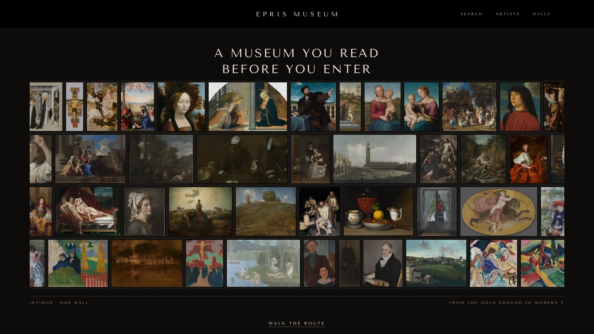
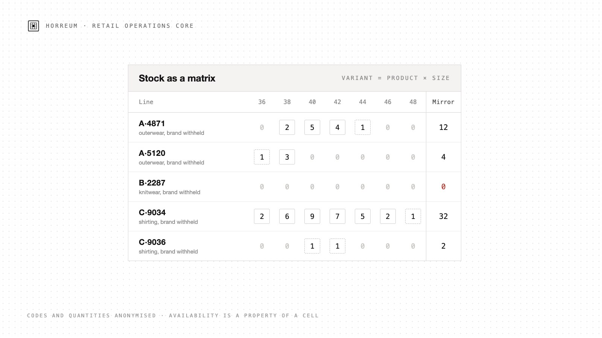
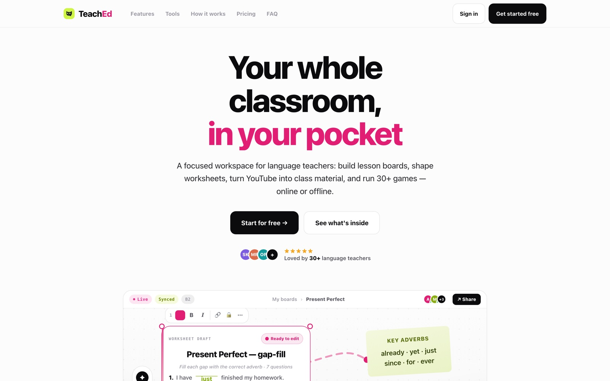
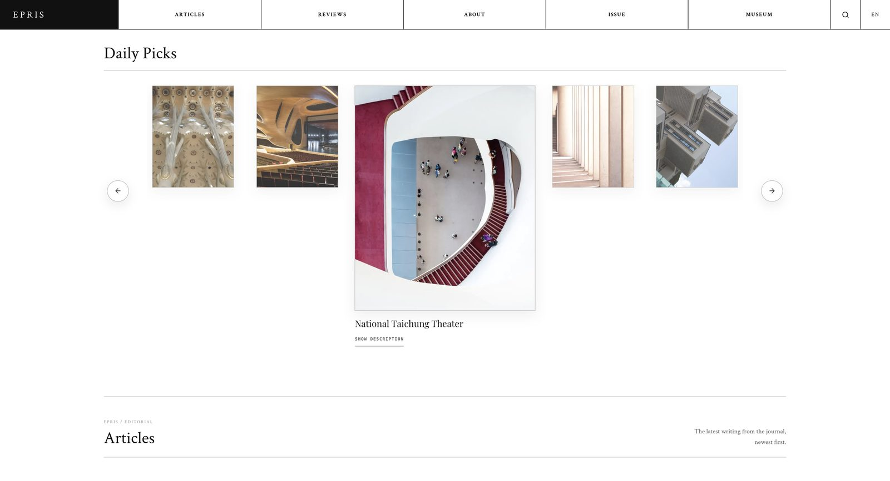
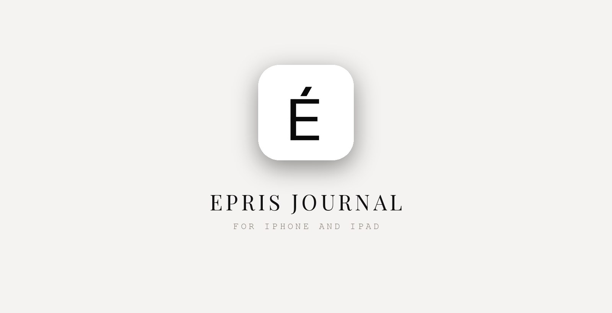
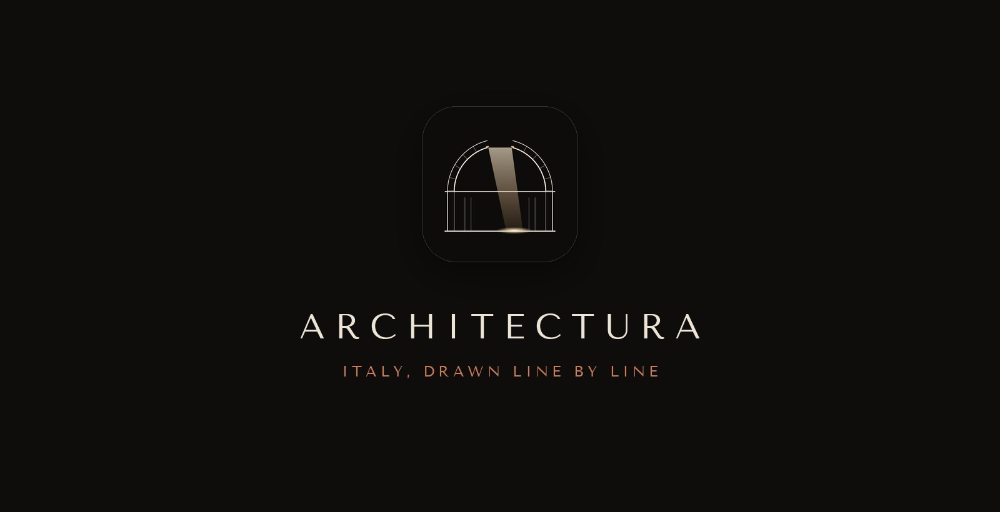
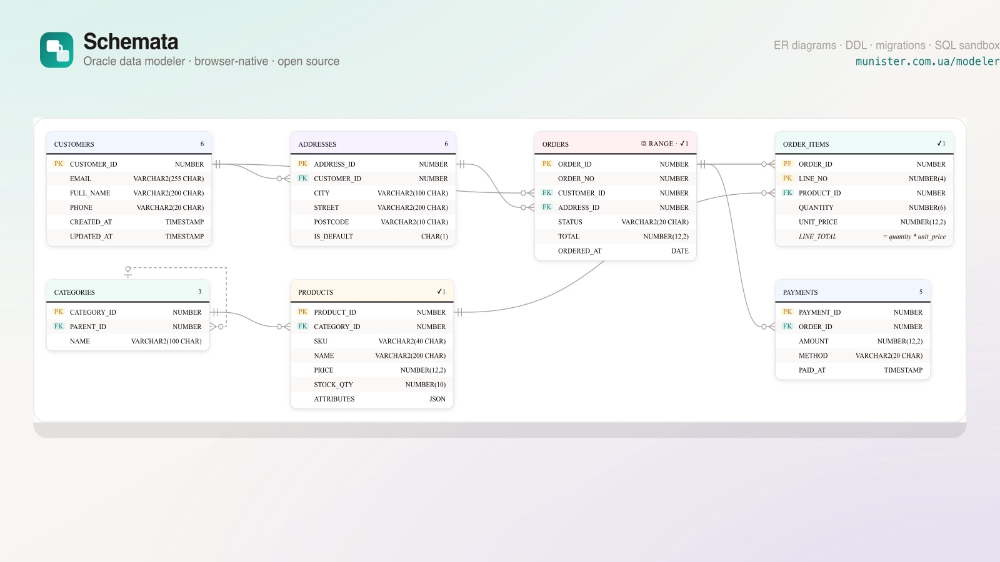
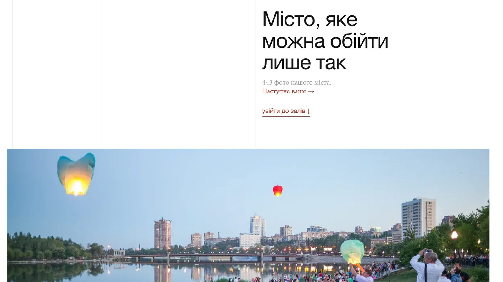
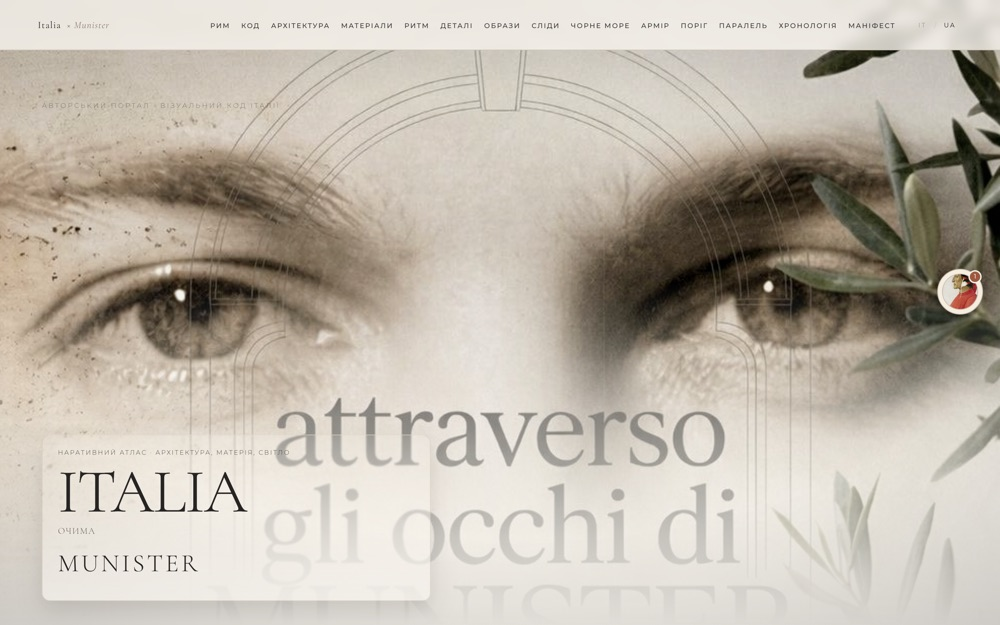

Viacheslav
Munister
Digital systems for research, publishing and operations.
Researcher and product architect. I design and build editorial platforms, cultural and learning projects, and native iOS apps in Swift and SwiftUI.
Applied systems practice
Selected live systems, each organised around a concrete research or operational problem, a data model and a maintainable delivery path.

EPRIS Museum
A museum without a building: 583 openly licensed works by 360 artists, hung as one route through 40 halls, each shown at its true scale with source and licence.

Horreum
An operations core for a clothing retailer: schema matching, deterministic record linkage and stock kept correct under concurrent writers.

TeachEd
A workspace for language teachers that turns plans, video and vocabulary into editable lessons, worksheets and more than thirty classroom games.

EPRIS Journal
An independent journal of architecture, design and visual culture, where every piece carries a digital passport: provenance, review and a path for re-use.

EPRIS Journal for iPhone and iPad
The journal’s native app for iPhone and iPad: essays typeset for the screen, full-screen photography and offline reading. No account, no tracking.

Architectura: Italy Drawn
An atlas of Italian architecture drawn line by line: 47 measured plates from Aosta to Sicily, 599 named parts, the live sun of Rome through the Pantheon’s oculus, 3D models and seven courses with exams and diplomas.

Schemata
A browser-native relational modeller for Oracle: tables and relations like a design tool, DDL import and export, and an SQL sandbox. No build step, no backend.

Museum of Donetsk Photography
A photographic museum of a city that can now only be walked through in pictures: over four hundred images across eight halls, open to readers’ own frames.

Italy Chapter
A bilingual study of Italy’s visual language in proportion, light and material, told through an atlas, a timeline and side-by-side comparisons.
Applied systems and prototypes
The layers a working system needs: language, data model, infrastructure and the standards that connect it.
Languages
TypeScript, Python, SQL, Swift, and C++ where a system sits closer to the machine.
Frameworks and interfaces
React and Next.js, SwiftUI for iOS, and plain HTML, CSS and JavaScript where no framework is needed.
Data and backend
PostgreSQL, SQLite and Oracle modelling; Flask services, REST APIs and deterministic import pipelines.
Infrastructure and operations
Linux, nginx and TLS, systemd, Docker and GitHub Actions, with backups designed in from the start.
Integration and standards
LLM APIs in editorial workflows, time zones, TopoJSON, IIIF museum collections, JWT and WebSockets.
Research
29 peer-reviewed papers, 2021 to 2026, primarily in Scopus-indexed proceedings. The research informs the practical work above rather than sitting beside it.
Industrial automation and measurement: edge computing and machine learning for decisions made under real constraints.
Writing
Essays, criticism and interviews in EPRIS Journal. 42 pieces, newest first.
 Oct 4, 2026
Oct 4, 2026
How to Stand in an Unstable World: Mona Hatoum at Fondazione Prada
Essay · Mona Hatoum · Sculpture Oct 4, 2026
Oct 4, 2026
When a Furniture Brand Serves Lunch
Review · Poliform Café · Piazza della Scala, Milan · Stefano Belingardi Clusoni & Poliform Lab Oct 3, 2026
Oct 3, 2026
Cathy de Monchaux: The Poise of Wounds
Essay · Cathy De Monchaux · Sculpture Oct 2, 2026
Oct 2, 2026
The Painting Is Still Wet: Emma McIntyre and Art That Refuses to Finish
Essay · Emma Mcintyre · Contemporary Painting Oct 2, 2026
Oct 2, 2026
The Building Wears Its Forces: Inside the Radical Structure of Powerhouse Parramatta
Essay · Powerhouse Parramatta · Moreau KusunokiMost of this work is about making archives, collections and records easier to find, read and reuse.
Member of two French associations that research cultural heritage and keep it close to lived places and public conversation.
- 01En Quête de Patrimoine
- 02Histoire dʼen Parler
Systems analysis and architecture, operational data models, editorial research infrastructure, ERP, IIoT and edge computing, machine learning and interface prototyping.